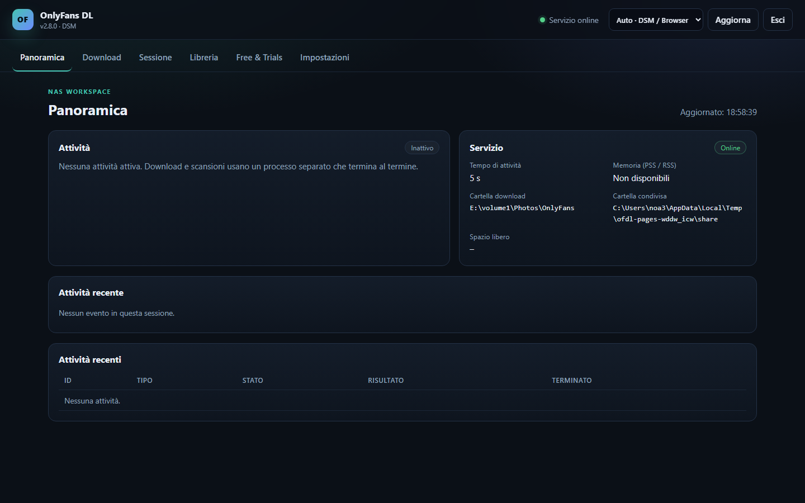

La tua libreria, direttamente sul NAS.
Un pacchetto DSM 7.2 nativo per il downloader OnlyFans. Installa un runtime Python 3.13 privato e avvia una piccola interfaccia web sul NAS. Download, scansioni degli abbonamenti e anteprime vengono eseguiti in un processo worker separato e di breve durata.
Cosa offre
Pacchetto nativo
Installazione tramite Package Center. Per l’uso normale non servono passaggi manuali di Python, pip o SSH.
Servizio di controllo leggero
Il servizio permanente usa solo la libreria standard. Le librerie pesanti vengono caricate solo dal worker temporaneo.
Interfaccia web
Importazione e test della sessione, selezione cartelle, scelta creator, download, pausa/annullamento, pianificazione e stato.
Libreria esistente
Riusa file, struttura delle cartelle, file .part e il manifest .ofdl.sqlite3 esistente.

Installazione
- Aggiungere la fonte SynoCommunity.
Package Center → Impostazioni → Fonti pacchetti →https://packages.synocommunity.com/ - Installare lo SPK.
Package Center → Installazione manuale. Python 3.13 viene installato come dipendenza. - Impostare la password web.
La procedura chiede una password. Apri il pacchetto dal menu DSM ohttp://<IP-NAS>:8765/. - Scegliere una cartella e importare una sessione.
In DSM concedi asc-onlyfansdlaccesso Lettura/Scrittura solo alla cartella condivisa scelta (Permessi → Utente interno di sistema). Salva un percorso di libreria esistente nelle impostazioni. Nessuna cartella condivisa viene creata automaticamente.
Modello di sicurezza
Il pacchetto viene eseguito con l’account di servizio DSM senza privilegi sc-onlyfansdl.
Non richiede root né l’appartenenza al gruppo amministratori. L’interfaccia web ha una propria password;
non è il SSO DSM. La sessione è salvata con modo 0600 e non viene mai scritta in impostazioni o log.
Per l’accesso remoto metti il reverse proxy HTTPS di DSM davanti alla porta 8765. Non esporre la porta direttamente su Internet.
Archiviazione e compatibilità
Libreria
Un solo percorso salvato esplicitamente nelle impostazioni per download, libreria e pianificazione. I file restano al loro posto. Gli aggiornamenti richiedono di confermare il percorso; le vecchie cartelle condivise non vengono eliminate.
Memoria
Il servizio di controllo resta piccolo. Il worker termina dopo ogni attività. L’obiettivo di 50 MiB PSS inattivi non è ancora stato verificato sul DS723+.
Pianificazione
Un orario giornaliero può avviare le impostazioni di download salvate. Non viene mai eseguita più di un’attività alla volta.
Lingua e accesso
Sette lingue dell’interfaccia, inclusi testi principali in italiano, olandese e portoghese. La modalità Auto usa la lingua DSM disponibile poi il browser; la scelta manuale ha priorità. I testi mancanti tornano a inglese/tedesco. La sessione resta dopo ricarica e aggiornamento.
Stato e ripresa
La ricarica ripristina l’attività corrente e gli ultimi eventi. Scansione e trasferimento file hanno indicatori separati. Gli errori API temporanei mostrano un’attesa annullabile di tre minuti.
Free & Trials
Ricerca in sola lettura e riabbonamenti giornalieri opzionali solo per profili esplicitamente autorizzati e riverificati come permanentemente gratuiti. Le prove restano sul sito per il possibile rinnovo a pagamento. Un cambio di prezzo tra verifica e risposta non può essere escluso del tutto.
Documentazione
README
Panoramica, installazione e note di rilascio (EN).
Installazione
Configurazione DSM passo passo, consenso archivio e risoluzione problemi (EN).
Architettura
Servizio di controllo, worker, attività SQLite e permessi (EN).
Rapporto di test
Risultati locali e checklist hardware DSM (EN).
Sicurezza
Gestione sessione, esposizione e reset (EN).
Affidabilità
Riconnessione, arresto completo e limiti del riabbonamento gratuito (EN).